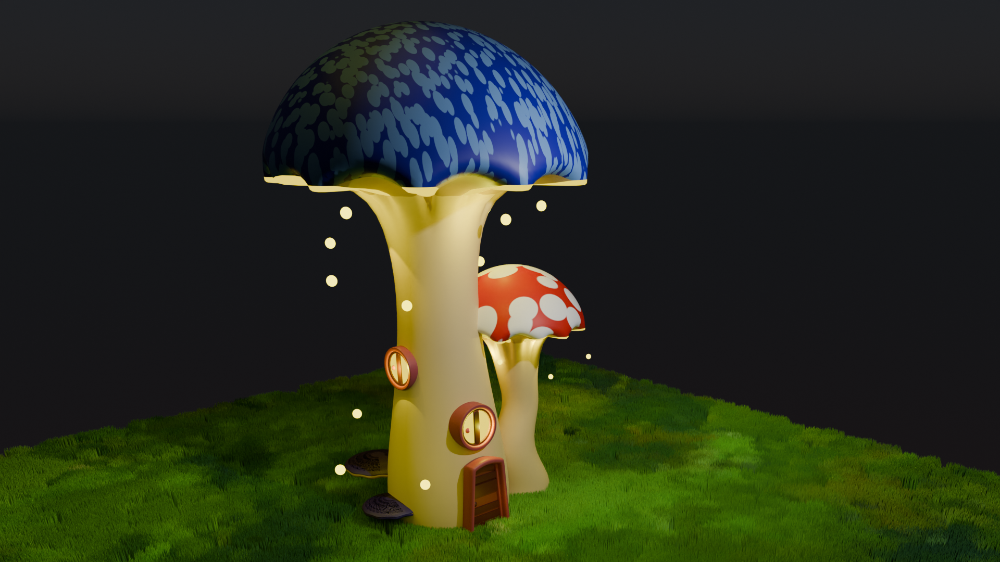
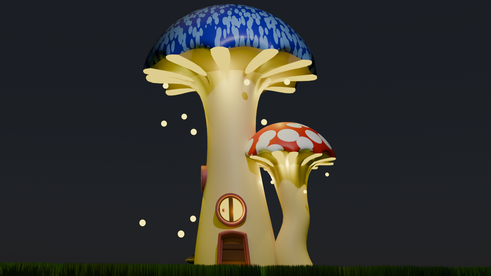
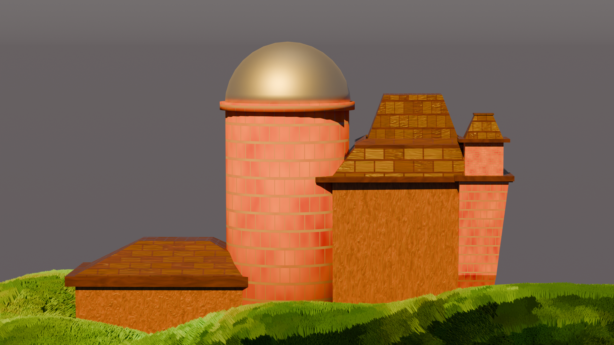
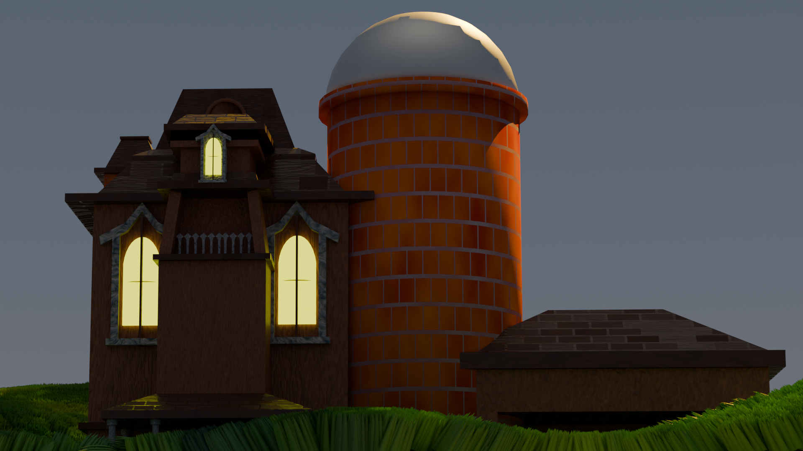
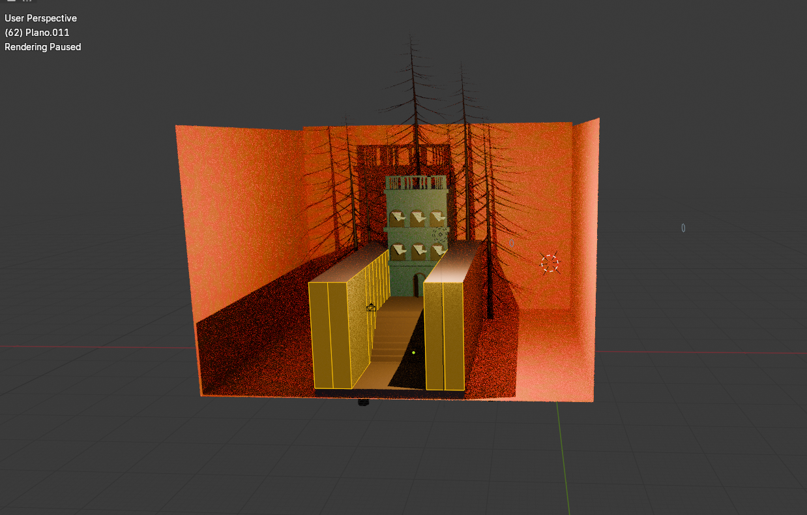

Descripción del trabajo
En el ámbito del 3D, mi enfoque se centra en la creación de entornos y assets que cuentan historias por sí mismos. Utilizo Blender como herramienta principal para transformar conceptos abstractos en volúmenes tangibles, equilibrando lo fantástico con lo arquitectónico.
Herramientas utilizadas
- Blender
- Normad sculpt
- Tinkercard




